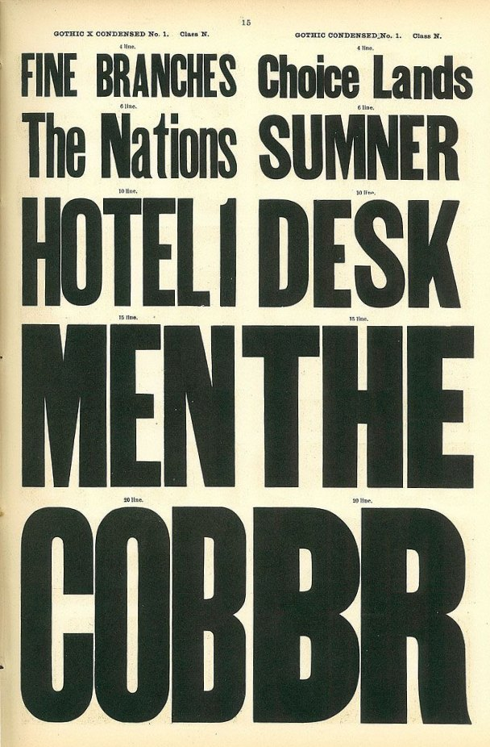

Термин

плотность шрифта
font density, optical density
Соотношение количества черного к количеству белого в знаках шрифта.
Плотность шрифта определяется рисунком и пропорцией шрифта, толщиной штрихов и размерами внутренних просветов знаков. Чем плотность шрифта выше, тем более визуально темным и тяжелым воспринимается текст.
При одинаковом кегле и начертании плотность разных гранитур может заметно отличаться.
Мануфактура «The Hamilton Manufacturing Co.»), страница каталога образцов деревянных шрифтов «Gothic X Condensed No. 1 / Gothic Condensed No. 1», США, конец XIX — начало XX века